Package interpretCI is a package to estimate confidence intervals for mean, proportion, mean difference for unpaired and paired samples and proportion difference. Draw estimation plot of the confidence intervals. Generate documents explaining the statistical result step by step.
Main functions
Package interpretCI have three main functions
1. meanCI(), propCI()
The main function is meanCI() and propCI(). The meanCI() function estimate confidence interval of a mean or mean difference. The propCI() function estimate confidence interval of a proportion or difference in proportion. Both functions can take raw data or summary statistics.
# With raw data
meanCI(mtcars,mpg)call: meanCI.data.frame(x = mtcars, mpg)
method: One sample t-test
alternative hypothesis:
true mean is not equal to 0
Results
# A tibble: 1 × 7
m se DF lower upper t p
<chr> <chr> <chr> <chr> <chr> <chr> <chr>
1 20.09062 1.0654 31 17.91768 22.26357 18.857 < 2.2e-16
# With raw data, Perform one-sample t-test
meanCI(mtcars,mpg,mu=23)call: meanCI.data.frame(x = mtcars, mpg, mu = 23)
method: One sample t-test
alternative hypothesis:
true mean is not equal to 23
Results
# A tibble: 1 × 7
m se DF lower upper t p
<chr> <chr> <chr> <chr> <chr> <chr> <chr>
1 20.09062 1.0654 31 17.91768 22.26357 -2.7307 0.01033The meanCI function estimate confidence interval of mean without raw data. For example, you can answer the following question.
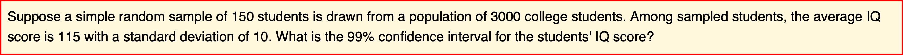
meanCI(n=150,m=115,s=10,alpha=0.01)call: meanCI.default(n = 150, m = 115, s = 10, alpha = 0.01)
method: One sample t-test
alternative hypothesis:
true mean is not equal to 0
Results
# A tibble: 1 × 7
m se DF lower upper t p
<chr> <chr> <chr> <chr> <chr> <chr> <chr>
1 115 0.8165 149 112.8696 117.1304 140.85 < 2.2e-16You can specify confidence interval with alpha argument and suggested true mean with mu argument and select alternative hypothesis with alternative argument. You can see the full story in the vignette named “Confidence interval for a mean”.
You can estimate mean difference with or without raw data.
meanCI(iris,Petal.Width,Petal.Length)call: meanCI.data.frame(x = iris, Petal.Width, Petal.Length)
method: Welch Two Sample t-test
alternative hypothesis:
true unpaired differences in means is not equal to 0
Results
# A tibble: 1 × 6
control test DF CI t p
<chr> <chr> <chr> <chr> <chr> <chr>
1 Petal.Width Petal.Length 202.69 -2.56 [95CI -2.87; -2.25] -16.297 < 2.2e-16You can answer the following question about difference of means.
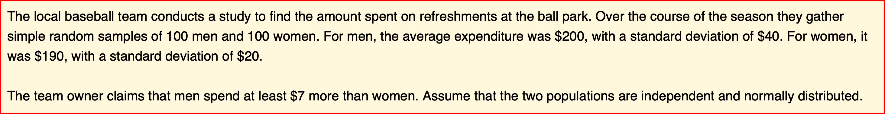
x=meanCI(n1=100,n2=100,m1=200,s1=40,m2=190,s2=20,mu=7,alpha=0.05,alternative="greater")
xcall: meanCI.default(n1 = 100, n2 = 100, m1 = 200, s1 = 40, m2 = 190, s2 = 20, mu = 7, alpha = 0.05, alternative = "greater")
method: Welch Two Sample t-test
alternative hypothesis:
true unpaired differences in means is greater than 7
Results
# A tibble: 1 × 6
control test DF CI t p
<chr> <chr> <chr> <chr> <chr> <chr>
1 x y 145.59 10.00 [95CI 2.60; Inf] 0.67082 0.2517You can see the full story in the vignette named “Hypothesis test for a difference between means”.
Similarly, propCI() function can estimate confidence interval of proportion or difference in two proportions.
propCI(n=100,p=0.73,P=0.8,alpha=0.01)$data
# A tibble: 1 × 1
value
<lgl>
1 NA
$result
alpha n df p P se critical ME lower upper
1 0.01 100 99 0.73 0.8 0.04 2.575829 0.1030332 0.6269668 0.8330332
CI z pvalue alternative
1 0.73 [99CI 0.63; 0.83] -1.75 0.08011831 two.sided
$call
propCI(n = 100, p = 0.73, P = 0.8, alpha = 0.01)
attr(,"measure")
[1] "prop"2. plot()
The plot() function draw a estimation plot with the result of meanCI() function. You can see many examples on the following sections.
3.interpret()
You can generate documents explaining the statistical result step by step. You can see several vignettes in this package and they are made by interpret() function. For example, you can answer the following question.
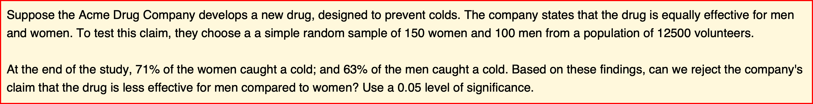
x=propCI(n1=150,n2=100,p1=0.71,p2=0.63,P=0,alternative="greater")
x$data
# A tibble: 1 × 2
x y
<lgl> <lgl>
1 NA NA
$result
alpha p1 p2 n1 n2 DF pd se critical ME lower
1 0.05 0.71 0.63 150 100 248 0.08 0.06085776 1.644854 0.1001021 -0.0201021
upper CI ppooled sepooled z pvalue
1 0.1801021 0.08 [95CI -0.02; 0.18] 0.678 0.06032081 1.326242 0.09237975
alternative
1 greater
$call
propCI(n1 = 150, n2 = 100, p1 = 0.71, p2 = 0.63, P = 0, alternative = "greater")
attr(,"measure")
[1] "propdiff"The interpret() function generate the document explaining statistical result step-by-step automatically and show this on RStudio viewer or default browser. It is the same document as the vignette named “Hypothesis test for a proportion”.
interpret(x)Basic Usage
1. Confidence interval of mean
The meanCI function estimate confidence interval of mean. The First example estimate the confidence interval of mean.
meanCI(mtcars,mpg)call: meanCI.data.frame(x = mtcars, mpg)
method: One sample t-test
alternative hypothesis:
true mean is not equal to 0
Results
# A tibble: 1 × 7
m se DF lower upper t p
<chr> <chr> <chr> <chr> <chr> <chr> <chr>
1 20.09062 1.0654 31 17.91768 22.26357 18.857 < 2.2e-16You can plot the confidence interval of mean.
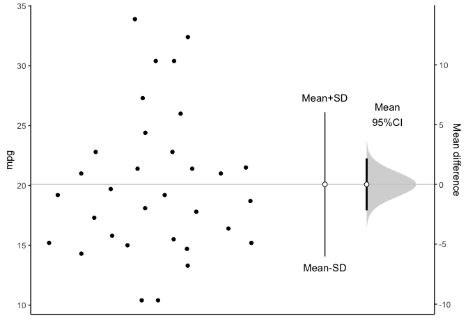 You can see all data plotted. The mean and its 95% confidence interval (95% CI) is displayed as a point estimate and vertical bar respectively on a separate but aligned axes.
2. Mean difference in unpaired samples
The meanCI function can estimate confidence interval of mean difference. This example estimate the confidence interval of mean difference between unpaired sample.
x=meanCI(iris,Sepal.Width,Sepal.Length)
xcall: meanCI.data.frame(x = iris, Sepal.Width, Sepal.Length)
method: Welch Two Sample t-test
alternative hypothesis:
true unpaired differences in means is not equal to 0
Results
# A tibble: 1 × 6
control test DF CI t p
<chr> <chr> <chr> <chr> <chr> <chr>
1 Sepal.Width Sepal.Length 225.68 -2.79 [95CI -2.94; -2.64] -36.463 < 2.2e-16Above result is consistent with t.test()
t.test(iris$Sepal.Width, iris$Sepal.Length) Welch Two Sample t-test
data: iris$Sepal.Width and iris$Sepal.Length
t = -36.463, df = 225.68, p-value < 2.2e-16
alternative hypothesis: true difference in means is not equal to 0
95 percent confidence interval:
-2.93656 -2.63544
sample estimates:
mean of x mean of y
3.057333 5.843333 You can get estimation plot with plot().
plot(x,ref="test",side=FALSE)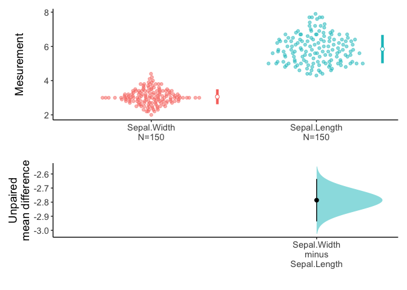
An estimation plot has two features.
It presents all datapoints as a swarmplot, which orders each point to display the underlying distribution.
It presents the effect size as a 95% confidence interval on a separate but aligned axes.
3. Mean differences in paired sample
You can draw an estimation plot in paired sample.
data(Anorexia,package="PairedData")
meanCI(Anorexia,Post,Prior,paired=TRUE) %>% plot(ref="test",side=FALSE)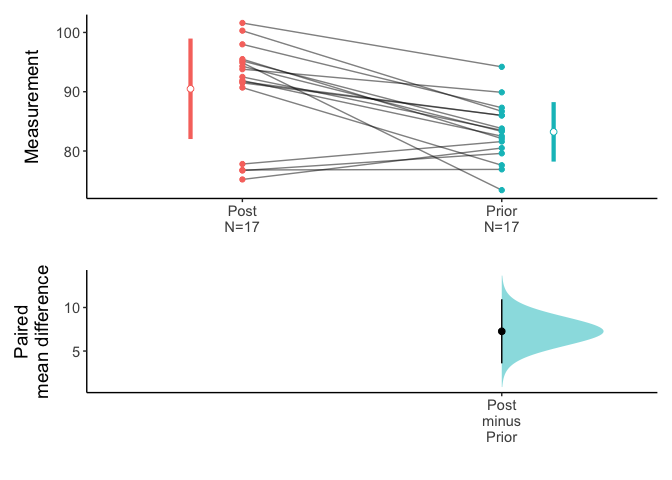
Above result is compatible with t.test().
t.test(Anorexia$Post,Anorexia$Prior,paired=TRUE)4. One-sided test
Anorexia data in PairedData package consist of 17 paired data corresponding to the weights of girls before and after treatment for anorexia. Test the claims that the patients gain at least more than four pounds in weights after treatment. Use an 0.05 level of significance. Assume that the mean differences are approximately normally distributed.
t.test(Anorexia$Post,Anorexia$Prior,paired=TRUE,alternative="greater",mu=4) Paired t-test
data: Anorexia$Post and Anorexia$Prior
t = 1.8807, df = 16, p-value = 0.03917
alternative hypothesis: true difference in means is greater than 4
95 percent confidence interval:
4.233975 Inf
sample estimates:
mean of the differences
7.264706 You can see the 95% confidence interval of paired mean difference is 4.23 to Inf. And the p value is 0.03917. The plot.meanCI() function visualize the confidence interval. Note the line of true mean(mu) does not cross the confidence interval.
x=meanCI(Anorexia$Post,Anorexia$Prior,paired=TRUE,alternative="greater",mu=4)
plot(x,ref="test",side=FALSE)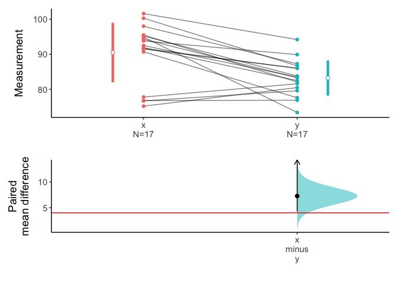
You can get document explaining the statistical result step by step with the following R code.
interpret(x)The interpret() function generate the document automatically and show this on RStudio viewer. It is the same document as the vignette named “Hypothesis test for the difference between paired means”. Alternatively, you can see the document with default browser.
interpret(x,viewer="browser")5. Compare three or more groups
You can set the group variable(x) and test variable(y) to compare variable among or between groups.
x=meanCI(iris,Species,Sepal.Length,mu=0)
xcall: meanCI.data.frame(x = iris, Species, Sepal.Length, mu = 0)
method: Welch Two Sample t-test
alternative hypothesis:
true unpaired differences in means is not equal to 0
Results
# A tibble: 2 × 6
control test DF CI t p
<chr> <chr> <chr> <chr> <chr> <chr>
1 setosa versicolor 86.538 -0.93 [95CI -1.11; -0.75] -10.521 < 2.2e-16
2 setosa virginica 76.516 -1.58 [95CI -1.79; -1.38] -15.386 < 2.2e-16
plot(x)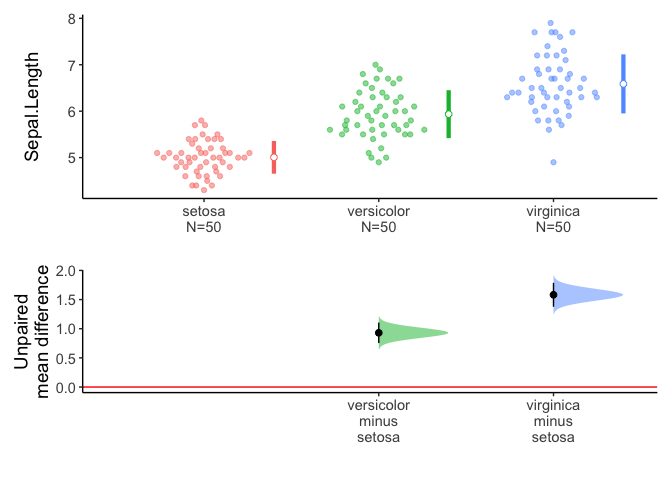
Alternatively, if you do not specify the variables, meanCI function select all numeric variables.

You can select variables of interest using dplyr::select.
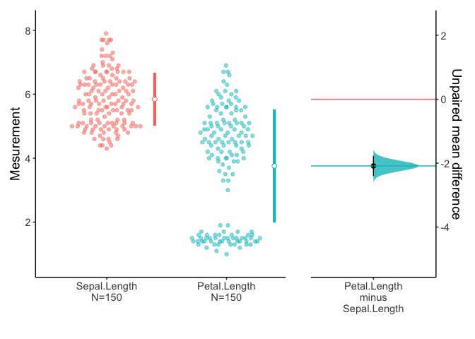
6. Multiple pairs
You can compare multiple pairs in an estimation plot. Data anscombe2 in PairedData package consists of 4 sets of paired sample.
data(anscombe2,package="PairedData")
anscombe2 X1 Y1 X2 Y2 X3 Y3 X4 Y4 Subject
1 8.885 10.135 8 -35 3.375 6.625 0.540 -0.540 S01
2 14.380 11.940 7 -30 -0.300 2.300 1.980 0.020 S02
3 8.015 6.025 17 -25 10.025 11.975 1.100 0.900 S03
4 5.835 3.045 15 -20 2.350 3.650 3.420 0.580 S04
5 5.470 1.870 12 -15 7.675 8.325 2.540 1.460 S05
6 12.060 12.640 5 -10 9.000 9.000 1.655 2.345 S06
7 11.720 9.660 6 -5 7.325 6.675 4.865 1.135 S07
8 10.315 9.265 19 0 6.650 5.350 3.980 2.020 S08
9 5.065 6.155 16 5 4.975 3.025 3.100 2.900 S09
10 8.235 10.785 11 10 3.300 0.700 2.215 3.785 S10
11 15.080 12.360 18 15 11.625 8.375 6.305 1.695 S11
12 13.485 10.175 9 20 17.765 8.235 5.420 2.580 S12
13 11.300 12.380 14 25 17.090 6.910 4.540 3.460 S13
14 9.820 9.660 13 30 19.410 8.590 3.655 4.345 S14
15 9.565 6.955 10 35 20.735 9.265 2.775 5.225 S15You can draw multiple pairs by setting the idx argument with list.
meanCI(anscombe2,idx=list(c("X1","Y1"),c("X4","Y4"),c("X3","Y3"),c("X2","Y2")),paired=TRUE,mu=0) %>% plot()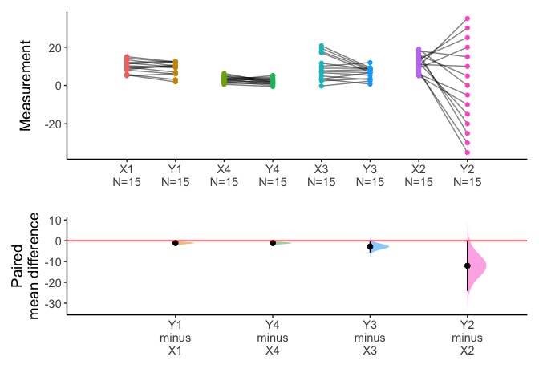
x=meanCI(anscombe2,idx=list(c("X1","X2","X3","X4"),c("Y1","Y2","Y3","Y4")),paired=TRUE,mu=0)
plot(x)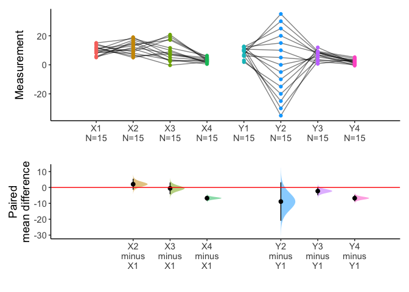
You can draw multiple pairs with long form data also.
7. Split the data with group argument
You can split data with group argument and draw estimation plot with categorical(x) and continuous variable(y).
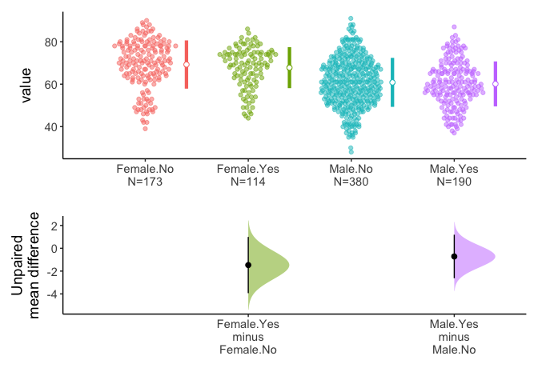
You can select one grouping variable and multiple continuous variables of interest and compare variables within groups.
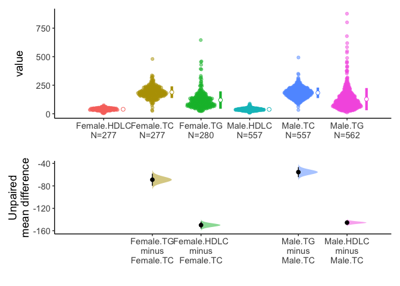 Alternatively, you can select one grouping variable and multiple continuous variables of interest and compare each variable between/among groups.
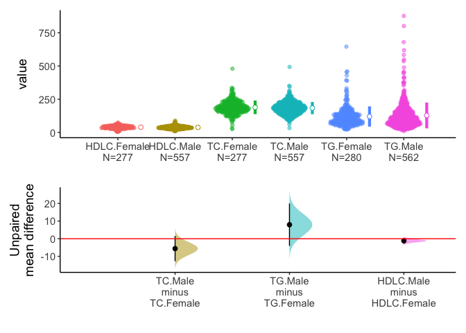